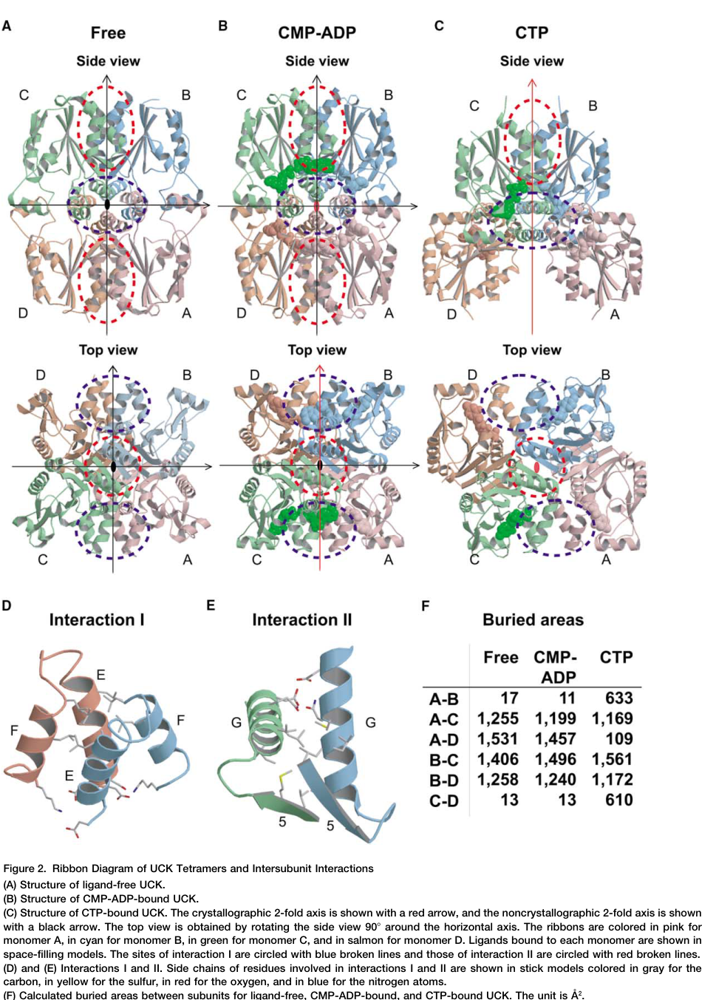

Uridine-cytidine kinase 2 (UCK2) is a cytosolic pyrimidine ribonucleoside kinase that catalyzes the phosphorylation of uridine and cytidine to their respective monophosphates (UMP and CMP) using ATP or GTP as phosphate donors. UCK2 is a key enzyme in the pyrimidine salvage pathway, essential for nucleotide metabolism and RNA/DNA synthesis. The enzyme functions as a homotetramer and exhibits substrate specificity for ribonucleosides, not deoxyribonucleosides. UCK2 also activates cytotoxic nucleoside analogs used in cancer chemotherapy. Expression is tissue-specific, with high levels in placenta and various cancers.
| GO Term | Evidence | Action | Reason |
|---|---|---|---|
|
GO:0005737
cytoplasm
|
IBA
GO_REF:0000033 |
ACCEPT |
Summary: IBA annotation correctly places UCK2 in the cytoplasm. Multiple lines of evidence confirm cytoplasmic localization, including Reactome annotation as cytosolic enzyme and experimental data showing cytosol localization in transfected cells.
Reason: Consistent with experimental evidence from multiple sources confirming cytoplasmic/cytosolic localization. UniProt CC line states function occurs in cytoplasm, Reactome describes enzyme as cytosolic, and direct fluorescence microscopy shows cytosol localization.
Supporting Evidence:
PMID:27239701
Subcellular localization studies showed that UCK1-GFP and UCK2-GFP were localized in the cell nucleus and cytosol, respectively.
Reactome:R-HSA-109903
Cytosolic uridine-cytidine kinase 2 (UCK2) catalyzes the reactions of cytidine or uridine with ATP to form CMP or UMP and ADP
file:human/UCK2/UCK2-deep-research-perplexity-lite.md
See deep research file for comprehensive analysis
file:human/UCK2/UCK2-deep-research-falcon.md
cytosolic pyrimidine nucleoside salvage
|
|
GO:0004849
uridine kinase activity
|
IBA
GO_REF:0000033 |
ACCEPT |
Summary: IBA annotation for uridine kinase activity is well-supported. UCK2 catalyzes phosphorylation of uridine to UMP using ATP. This is one of the two core catalytic activities of UCK2.
Reason: This represents a core molecular function of UCK2, supported by direct experimental evidence and multiple independent studies. UniProt catalytic activity annotation confirms this function with EC 2.7.1.48.
Supporting Evidence:
PMID:11306702
The enzymes did not phosphorylate deoxyribonucleosides or purine ribonucleosides. UCK1 mRNA was detected as two isoforms... The enzymes phosphorylated several of the analogs, such as 6-azauridine, 5-fluorouridine
PMID:27239701
Uridine-cytidine kinase (UCK) catalyzes the phosphorylation of uridine and cytidine
file:human/UCK2/UCK2-deep-research-falcon.md
Human UCK2 (UniProt Q9BZX2; EC 2.7.1.48) catalyzes ATP-dependent
phosphorylation of the pyrimidine ribonucleosides uridine and cytidine to
UMP and CMP, respectively, constituting the first/rate-limiting step of
pyrimidine ribonucleoside salvage in many settings.
|
|
GO:0009224
CMP biosynthetic process
|
IEA
GO_REF:0000108 |
MODIFY |
Summary: IEA annotation for CMP biosynthetic process based on logical inference from cytidine kinase activity. While technically correct (UCK2 does synthesize CMP from cytidine), this term is overly general as it does not distinguish between de novo and salvage pathways. The more specific term GO:0044211 (CTP salvage) better captures UCK2's specific role in the salvage pathway.
Reason: The term is too general and does not accurately reflect that UCK2 functions specifically in the salvage pathway, not de novo biosynthesis. UCK2 catalyzes cytidine + ATP to CMP + ADP, which is the first step of CTP salvage. The annotation should use GO:0044211 (CTP salvage) which is already present with IDA evidence.
Proposed replacements:
CTP salvage
Supporting Evidence:
PMID:11306702
shown to catalyze the phosphorylation of Urd and Cyd
file:human/UCK2/UCK2-uniprot.txt
Pyrimidine metabolism; CTP biosynthesis via salvage pathway; CTP from cytidine: step 1/3
|
|
GO:0000166
nucleotide binding
|
IEA
GO_REF:0000043 |
MARK AS OVER ANNOTATED |
Summary: This is a very general molecular function term. While UCK2 does bind nucleotides (ATP/GTP as phosphate donors, and uridine/cytidine substrates), this annotation is too non-specific to be informative. The more specific ATP binding term (GO:0005524) is already present.
Reason: This term is too general and does not provide meaningful information about UCK2 specific function. The GO:0005524 (ATP binding) annotation is more informative and specific. Nucleotide binding is implied by the kinase activity annotations.
Supporting Evidence:
PMID:11306702
named UCK1 and UCK2, were expressed in Escherichia coli and shown to catalyze the phosphorylation of Urd and Cyd
|
|
GO:0004849
uridine kinase activity
|
IEA
GO_REF:0000120 |
ACCEPT |
Summary: Duplicate annotation of uridine kinase activity with different evidence code. This IEA annotation is redundant with the IBA and IDA annotations for the same term.
Reason: While redundant, computational annotations can coexist with experimental ones. The annotation is correct and represents a core function of UCK2.
Supporting Evidence:
PMID:11306702
The enzymes did not phosphorylate deoxyribonucleosides or purine ribonucleosides... catalyze the phosphorylation of Urd and Cyd
|
|
GO:0005524
ATP binding
|
IEA
GO_REF:0000120 |
ACCEPT |
Summary: UCK2 uses ATP (or GTP) as a phosphate donor in its kinase reactions. Crystal structures show ATP binding sites. This is an essential component of UCK2 catalytic mechanism.
Reason: ATP binding is a core molecular function required for UCK2 kinase activity. Supported by structural data showing ATP binding sites and biochemical evidence that ATP serves as phosphate donor.
Supporting Evidence:
Reactome:R-HSA-109903
cytidine or uridine with ATP to form CMP or UMP and ADP
file:human/UCK2/UCK2-deep-research-falcon.md
with ATP serving as the phosphate donor.
|
|
GO:0016301
kinase activity
|
IEA
GO_REF:0000120 |
MARK AS OVER ANNOTATED |
Summary: General kinase activity term that is less specific than the actual uridine kinase and cytidine kinase activities already annotated. While technically correct, it provides little additional information.
Reason: This is a parent term of the more specific uridine kinase and cytidine kinase activities. The specific terms (GO:0004849, GO:0043771) provide more informative annotations. General parent terms like this are often automatically inferred but do not add functional specificity.
Supporting Evidence:
PMID:11306702
shown to catalyze the phosphorylation of Urd and Cyd
|
|
GO:0016740
transferase activity
|
IEA
GO_REF:0000043 |
MARK AS OVER ANNOTATED |
Summary: Extremely general molecular function term. Kinases are indeed transferases (transferring phosphate groups), but this term is far too broad to be informative about UCK2 specific function.
Reason: This is a very high-level parent term that provides minimal functional information. The specific kinase activity terms are far more informative. Such general terms are typically auto-generated but do not contribute meaningful biological insight.
Supporting Evidence:
PMID:11306702
catalyze the phosphorylation of Urd and Cyd
|
|
GO:0043771
cytidine kinase activity
|
IEA
GO_REF:0000120 |
ACCEPT |
Summary: Cytidine kinase activity is one of the two core catalytic activities of UCK2, converting cytidine to CMP. This is well-documented experimentally.
Reason: This represents a core molecular function of UCK2, equally important as its uridine kinase activity. Both activities are confirmed by direct biochemical assays and structural studies.
Supporting Evidence:
PMID:11306702
catalyze the phosphorylation of Urd and Cyd. The enzymes did not phosphorylate deoxyribonucleosides or purine ribonucleosides
file:human/UCK2/UCK2-deep-research-falcon.md
UCK2 is selective for pyrimidine ribonucleosides and does not
phosphorylate purine ribonucleosides or 2′-deoxyribonucleosides
|
|
GO:0007631
feeding behavior
|
IEA
GO_REF:0000107 |
REMOVE |
Summary: This annotation appears to be a computational transfer from orthologs and is likely spurious for UCK2. There is no literature evidence connecting UCK2 to feeding behavior, and this seems implausible for a cytosolic nucleoside kinase involved in nucleotide metabolism.
Reason: No supporting evidence for UCK2 involvement in feeding behavior. This
appears to be an incorrect orthology-based inference. The deep research and
all publications focus on nucleotide metabolism, cancer biology, and drug activation,
with no mention of feeding behavior. The falcon deep research, which surveyed
foundational enzymology through 2024 cancer/antiviral literature, likewise
describes UCK2 exclusively as a pyrimidine ribonucleoside salvage kinase with
no feeding-behavior role, reinforcing that this is a false positive from
automated annotation transfer.
Supporting Evidence:
file:human/UCK2/UCK2-deep-research-falcon.md
Human UCK2 (UniProt Q9BZX2; EC 2.7.1.48) catalyzes ATP-dependent
phosphorylation of the pyrimidine ribonucleosides uridine and cytidine to
UMP and CMP, respectively, constituting the first/rate-limiting step of
pyrimidine ribonucleoside salvage in many settings.
|
|
GO:0048678
response to axon injury
|
IEA
GO_REF:0000107 |
UNDECIDED |
Summary: This annotation is based on automated ortholog transfer. While UCK2 is expressed in neural tissues and has been studied in neuroblastoma, there is no direct evidence linking it to axon injury response. This may be an overly specific inference from expression data.
Reason: No direct experimental evidence in the available literature for UCK2 role in axon injury response. The neuroblastoma study focuses on UCK2 role in pyrimidine metabolism and drug sensitivity, not axon injury. Would need access to the original ortholog study (GO_REF:0000107) to evaluate this claim properly.
|
|
GO:0071453
cellular response to oxygen levels
|
IEA
GO_REF:0000107 |
UNDECIDED |
Summary: This annotation comes from automated ortholog transfer. There is no direct evidence in the available literature connecting UCK2 to oxygen level response. While UCK2 is overexpressed in various cancers which may involve hypoxic conditions, this is not the same as having a specific role in oxygen level response.
Reason: No direct experimental evidence in available publications for UCK2 role in cellular response to oxygen levels. Would need to access the original reference and any supporting ortholog data to properly evaluate this annotation. The cancer association does not necessarily imply a direct oxygen response function.
|
|
GO:0042802
identical protein binding
|
IPI
PMID:32296183 A reference map of the human binary protein interactome. |
ACCEPT |
Summary: This IPI annotation comes from the HuRI human reference interactome study, a large-scale yeast two-hybrid screen that detected UCK2 self-interaction. This is fully consistent with crystallographic data showing UCK2 functions as a homotetramer in its active form.
Reason: UCK2 forms homotetramers, which necessarily involves identical protein binding. This is strongly supported by X-ray crystallographic structures (PDB entries 1UDW, 1UEI, 1UEJ, 1UFQ, etc.) showing the tetrameric assembly and the HuRI binary interaction data confirming self-interaction. The functional oligomerization state is well-established as essential for enzymatic activity.
Supporting Evidence:
PMID:32296183
(#)Contributed equally Global insights into cellular organization and genome function require comprehensive understanding of the interactome networks that mediate genotype-phenotype relationships1,2
file:human/UCK2/UCK2-uniprot.txt
SUBUNIT: Homotetramer
file:human/UCK2/UCK2-deep-research-falcon.md
UCK2 is a ~29 kDa, 261-aa enzyme in the NMP kinase-fold family that forms
a homotetramer
|
|
GO:0044206
UMP salvage
|
IEA
GO_REF:0000120 |
ACCEPT |
Summary: UMP salvage is a core biological process function of UCK2. The enzyme catalyzes the first and only step in converting uridine to UMP in the salvage pathway.
Reason: This is a core biological process for UCK2, converting uridine to UMP in the salvage pathway. Well-supported by experimental data and pathway annotations. This is redundant with IDA annotations below but represents accurate function.
Supporting Evidence:
PMID:11306702
catalyze the phosphorylation of Urd and Cyd
Reactome:R-HSA-109903
cytidine or uridine with ATP to form CMP or UMP and ADP
file:human/UCK2/UCK2-deep-research-falcon.md
UCK2 catalyzes the first committed phosphorylation step
|
|
GO:0044211
CTP salvage
|
IEA
GO_REF:0000120 |
ACCEPT |
Summary: CTP salvage is a core biological process function of UCK2. UCK2 catalyzes the first step (cytidine to CMP) in the three-step salvage pathway converting cytidine to CTP.
Reason: This is a core biological process for UCK2. The enzyme performs the first step in the salvage pathway that recycles cytidine into CTP. Well-supported by experimental evidence and pathway databases. Redundant with IDA annotation below but accurate.
Supporting Evidence:
PMID:11306702
catalyze the phosphorylation of Urd and Cyd
Reactome:R-HSA-109903
cytidine or uridine with ATP to form CMP or UMP and ADP
file:human/UCK2/UCK2-deep-research-falcon.md
UCK2 catalyzes the first committed phosphorylation step
|
|
GO:0004849
uridine kinase activity
|
IDA
PMID:27239701 The pivotal role of uridine-cytidine kinases in pyrimidine m... |
ACCEPT |
Summary: Direct experimental evidence for uridine kinase activity from neuroblastoma study. This IDA annotation provides strong experimental support for this core function.
Reason: Excellent experimental support from direct assay. This is a core molecular function of UCK2. The IDA evidence code indicates direct biochemical demonstration of this activity.
Supporting Evidence:
PMID:27239701
Uridine-cytidine kinase (UCK) catalyzes the phosphorylation of uridine and cytidine as well as the pharmacological activation of several cytotoxic pyrimidine ribonucleoside analogues
|
|
GO:0044206
UMP salvage
|
IDA
PMID:27239701 The pivotal role of uridine-cytidine kinases in pyrimidine m... |
ACCEPT |
Summary: Direct experimental evidence for UMP salvage from neuroblastoma study showing UCK2 metabolizes uridine. Strong experimental support for this core biological process.
Reason: Excellent experimental support from direct functional assays in neuroblastoma cells. The study directly measured uridine metabolism via UCK2, demonstrating its role in UMP salvage. This is a core biological process for UCK2.
Supporting Evidence:
PMID:27239701
Transient and stable overexpression of UCK2 in neuroblastoma cells increased the metabolism of uridine and cytidine
|
|
GO:0004849
uridine kinase activity
|
IDA
PMID:11306702 Phosphorylation of uridine and cytidine nucleoside analogs b... |
ACCEPT |
Summary: Direct experimental evidence from the original cloning and characterization study. This is the foundational paper demonstrating UCK2 uridine kinase activity.
Reason: This is the primary experimental characterization of UCK2 uridine kinase activity from the original cloning study. Direct biochemical demonstration of this core molecular function with recombinant enzyme.
Supporting Evidence:
PMID:11306702
The approximately 30-kDa proteins, named UCK1 and UCK2, were expressed in Escherichia coli and shown to catalyze the phosphorylation of Urd and Cyd. The enzymes did not phosphorylate deoxyribonucleosides or purine ribonucleosides
|
|
GO:0043771
cytidine kinase activity
|
IDA
PMID:11306702 Phosphorylation of uridine and cytidine nucleoside analogs b... |
ACCEPT |
Summary: Direct experimental evidence from the original characterization study. This established cytidine kinase as one of the two core activities of UCK2.
Reason: Foundational experimental demonstration of UCK2 cytidine kinase activity from the original cloning and characterization study. Direct biochemical evidence with recombinant enzyme. This is a core molecular function.
Supporting Evidence:
PMID:11306702
shown to catalyze the phosphorylation of Urd and Cyd. The enzymes did not phosphorylate deoxyribonucleosides or purine ribonucleosides
|
|
GO:0044206
UMP salvage
|
IDA
PMID:11306702 Phosphorylation of uridine and cytidine nucleoside analogs b... |
ACCEPT |
Summary: Direct experimental evidence for UMP salvage function from the original characterization showing uridine phosphorylation. This demonstrated UCK2 role in the salvage pathway.
Reason: Excellent experimental support from the foundational study. Direct demonstration that UCK2 phosphorylates uridine to UMP, which is the salvage pathway for UMP biosynthesis. This is a core biological process.
Supporting Evidence:
PMID:11306702
catalyze the phosphorylation of Urd and Cyd. The enzymes did not phosphorylate deoxyribonucleosides or purine ribonucleosides
|
|
GO:0044211
CTP salvage
|
IDA
PMID:11306702 Phosphorylation of uridine and cytidine nucleoside analogs b... |
ACCEPT |
Summary: Direct experimental evidence for CTP salvage from the original study showing cytidine phosphorylation. UCK2 performs the first step in the CTP salvage pathway.
Reason: Strong experimental support from the foundational characterization study. Direct demonstration that UCK2 phosphorylates cytidine to CMP, the first step in CTP salvage pathway. This is a core biological process.
Supporting Evidence:
PMID:11306702
catalyze the phosphorylation of Urd and Cyd
|
|
GO:0005829
cytosol
|
TAS
Reactome:R-HSA-109903 |
ACCEPT |
Summary: TAS (Traceable Author Statement) annotation based on Reactome pathway annotation. Reactome describes UCK2 as cytosolic. This is consistent with experimental localization data.
Reason: Cytosol localization is well-supported by Reactome annotation and experimental evidence. While cytosol is a more specific term than cytoplasm (GO:0005737), both are appropriate. The TAS evidence from Reactome is reliable for subcellular localization.
Supporting Evidence:
Reactome:R-HSA-109903
Cytosolic uridine-cytidine kinase 2 (UCK2) catalyzes the reactions of cytidine or uridine with ATP to form CMP or UMP and ADP
PMID:27239701
Subcellular localization studies showed that UCK1-GFP and UCK2-GFP were localized in the cell nucleus and cytosol, respectively
|
|
GO:0005525
GTP binding
|
IDA
PMID:11306702 Phosphorylation of uridine and cytidine nucleoside analogs b... |
NEW |
Summary: UCK2 can use GTP as an alternative phosphate donor in addition to ATP. This is documented in the original characterization study and in UniProt. While ATP is the primary phosphate donor, GTP binding represents an additional molecular function that provides metabolic flexibility.
Reason: This represents a documented molecular function that is not currently annotated. The ability to use GTP as a phosphate donor is explicitly stated in UniProt and the original characterization paper. While less prominent than ATP binding, it represents a genuine alternative cofactor usage that should be annotated.
Supporting Evidence:
file:human/UCK2/UCK2-uniprot.txt
Can use ATP or GTP as a phosphate donor
PMID:11306702
shown to catalyze the phosphorylation of Urd and Cyd
|
The research report should be a detailed narrative explaining the function, biological processes, and localization of the gene product. Citations should be given for all claims.
You should prioritize authoritative reviews and primary scientific literature when conducting research. You can supplement
this with annotations you find in gene/protein databases, but these can be outdated or inaccurate.
We are specifically interested in the primary function of the gene - for enzymes, what reaction is catalyzed, and what is the substrate specificity? For transporters, what is the substrate? For structural proteins or adapters, what is the broader structural role? For signaling molecules, what is the role in the pathway.
We are interested in where in or outside the cell the gene product carries out its function.
We are also interested in the signaling or biochemical pathways in which the gene functions. We are less interested in broad pleiotropic effects, except where these elucidate the precise role.
Include evidence where possible. We are interested in both experimental evidence as well as inference from structure, evolution, or bioinformatic analysis. Precise studies should be prioritized over high-throughput, where available.
The evidence summarized here pertains specifically to human uridine–cytidine kinase 2 (UCK2; EC 2.7.1.48), corresponding to UniProt Q9BZX2, a pyrimidine ribonucleoside kinase that forms a homotetramer and is distinct from the related enzymes UCK1 and UCKL1. This specificity is explicit in primary structural work on human UCK2 and in pharmacologic studies using UCK2-targeting knockdown/biochemical assays. (suzuki2004structuralbasisfor pages 1-3, sarkisjan2016thecytidineanalog pages 1-2, mashayekh2022structurebasedprototypingof pages 6-12)
Pyrimidine salvage refers to recovery of pyrimidine nucleosides (notably uridine and cytidine) from extracellular sources or nucleic-acid turnover, converting them back into nucleotide pools. UCK2 catalyzes the first committed phosphorylation step, converting nucleosides to nucleoside monophosphates, which can then be further phosphorylated to di- and triphosphates for incorporation into RNA/DNA or other metabolic uses. This first phosphorylation step is often described as functionally rate-limiting for ribonucleoside salvage. (suzuki2004structuralbasisfor pages 1-3, okesliarmlovich2019discoveryofsmall pages 1-3)
Human UCK2 catalyzes ATP-dependent phosphorylation of the pyrimidine ribonucleosides:
- Uridine → UMP
- Cytidine → CMP
with ATP serving as the phosphate donor. (suzuki2004structuralbasisfor pages 1-3, rompay2001phosphorylationofuridine pages 3-4)
Recombinant human UCK1 and UCK2 both phosphorylate uridine and cytidine, and do not phosphorylate purine ribonucleosides (adenosine/guanosine) or 2′-deoxyribonucleosides under tested conditions, supporting stringent selection for pyrimidine ribonucleosides. (rompay2001phosphorylationofuridine pages 3-4, suzuki2004structuralbasisfor pages 1-3)
In a foundational comparative enzymology study (van Rompay et al., 2001), UCK2 exhibited:
- Lower Km for uridine and cytidine than UCK1 (approx. 4–6× lower), and
- Higher Vmax, resulting in markedly higher catalytic efficiency (kcat/Km) for UCK2 than UCK1. (rompay2001phosphorylationofuridine pages 3-4)
UCK2 phosphorylates a range of uridine/cytidine nucleoside analogs, enabling their conversion into active nucleotide metabolites. A broad panel tested in recombinant enzymes showed phosphorylation of multiple base-modified analogs (selected examples):
- 6-azauridine (UCK1 & UCK2)
- 6-azacytidine (reported as UCK2-only in that screen)
- 5-fluorouridine, 4-thiouridine, 5-bromouridine, and multiple N4-substituted cytidines (various tolerances)
while sugar-modified cytidine analogs such as araC and certain deoxy/dideoxy analogs were not substrates, consistent with ribose-OH requirements. (rompay2001phosphorylationofuridine pages 3-4)
Primary structural work also notes phosphorylation of cytotoxic ribonucleoside analogs including 5-fluorouridine and cyclopentenyl-cytidine derivatives as UCK substrates. (suzuki2004structuralbasisfor pages 1-3)
Human UCK2 adopts an NMP kinase-like fold and functions as a homotetramer. Crystal structures support tetrameric assemblies and show ligand-dependent conformational states. (suzuki2004structuralbasisfor pages 1-3, suzuki2004structuralbasisfor pages 4-6)
Visual evidence from the foundational structural paper illustrates tetrameric states and ligand-binding conformational changes, including inhibitor-bound states and remodeling of the acceptor-site cavity. (suzuki2004structuralbasisfor media fedd12be, suzuki2004structuralbasisfor media da16ea3f, suzuki2004structuralbasisfor media 76e0d74f, suzuki2004structuralbasisfor media 4a76c853)
Comparison of ligand-free versus ligand-bound structures indicates substantial induced-fit conformational change particularly around the acceptor (nucleoside) binding site, whereas the ATP-binding site remains comparatively constant across several ligand-bound structures. (suzuki2004structuralbasisfor pages 4-6)
UCK2 is described as:
- Activated by ATP, and
- Feedback-inhibited by UTP and CTP, with structural evidence from inhibitor-bound complexes and biochemical analyses. (suzuki2004structuralbasisfor pages 1-3, mashayekh2022structurebasedprototypingof pages 6-12)
Structure-based inhibitor prototyping identified a previously unrecognized allosteric site at the inter-subunit interface of tetrameric UCK2. These inhibitors act non-competitively (relative to uridine and ATP) and primarily reduce kcat without substantially changing Km, enabling “dialing” down salvage flux. (mashayekh2022structurebasedprototypingof pages 1-6, mashayekh2022structurebasedprototypingof pages 6-12)
In the retrieved corpus, UCK2 is consistently discussed as functioning in cytosolic pyrimidine nucleoside salvage (e.g., converting extracellular/plasma-derived nucleosides into nucleotide pools), but the current evidence set does not include direct microscopy-based localization experiments (e.g., immunofluorescence or cell fractionation with UCK2 detection). Thus, cytosolic localization is best treated as a pathway-context inference from salvage biology rather than definitively demonstrated here. (okesliarmlovich2019discoveryofsmall pages 1-3, mashayekh2022structurebasedprototypingof pages 1-6)
A recurring functional theme is the interaction between de novo pyrimidine synthesis (e.g., DHODH-dependent) and salvage (UCK2-dependent). When de novo synthesis is inhibited, salvage can compensate by phosphorylating extracellular uridine; therefore, combined targeting of DHODH and UCK2 has been proposed/validated in antiviral and metabolic intervention frameworks. (okesliarmlovich2019discoveryofsmall pages 1-3, mashayekh2022structurebasedprototypingof pages 6-12)
In an early tissue panel, UCK2 mRNA isoforms were detected only in placenta among investigated tissues, whereas UCK1 showed broader expression, supporting the historical view of UCK2 as more tissue-restricted. (rompay2001phosphorylationofuridine pages 3-4)
Later translational work continues to describe UCK2 as limited in normal tissues (often placenta/testis) but upregulated in many tumors, motivating “tumor-selective activation” strategies. (hassouni2019uridinecytidinekinase pages 1-2, fu2022themetabolicand pages 2-4)
A 2023 Nucleic Acids Research study (Xu et al., published Nov 2023, https://doi.org/10.1093/nar/gkad1002) reported that blood and liver have relatively low UCK2 expression compared with other tissues or cultured cells in referenced expression resources, which the authors discuss as potentially relevant for differences between in vitro mutagenicity results and in vivo genotoxicity assays for molnupiravir/NHC. (xu2023uridine–cytidinekinase2 pages 9-10)
A 2024 pan-cancer analysis of pyrimidine salvage genes reported that salvage-pathway genes generally show low mutation rates but notable copy-number variation, with UCK2 listed among genes showing amplifications across cancers; expression upregulation and correlations with clinical features/prognosis were also reported at a broad level (though quantitative UCK2-specific effect sizes were not extractable from the available excerpt). (li2024integrativeanalysesof pages 1-2)
Xu et al. (2023, Nucleic Acids Research) performed a CRISPR screen and found that inactivation of Uck2 increased cellular tolerance to β-d-N4-hydroxycytidine (NHC; active form of molnupiravir) and that UCK2 activity potentiated NHC-associated mutagenic outcomes in their cellular model; they further note that UCK2 phosphorylates multiple nucleoside analogs including azacytidine, fluorocyclopentenylcytosine, and 3′-ethynyl nucleosides. (xu2023uridine–cytidinekinase2 pages 9-10)
Watanabe et al. (2024, Blood Advances; Mar 2024, https://doi.org/10.1182/bloodadvances.2023011131) report that UCK2 (but not UCK1) is overexpressed in HTLV-1–infected T cells/ATL contexts and supports vigorous proliferation; they also summarize that UCK proteins catalyze phosphorylation of uridine/cytidine during salvage. This places UCK2 within the broader reprogramming of pyrimidine metabolism in proliferative immune-cell states. (watanabe2024reprogrammingofpyrimidine pages 6-7)
Wu et al. (2024, Cell Death Discovery; Aug 2024, https://doi.org/10.1038/s41420-024-02140-x) report elevated UCK2 in intrahepatic cholangiocarcinoma and show that UCK2 overexpression promotes proliferation, migration/invasion, tumor growth, and cisplatin resistance, mechanistically linked to PI3K/AKT/mTOR signaling and autophagy inhibition. Higher UCK2 expression was associated with aggressive tumor features, poorer survival, and lower chemotherapy sensitivity in that cohort. (wu2024uck2promotesintrahepatic pages 1-2)
Shen et al. (2024, Discover Oncology; Jan 2024, https://doi.org/10.1007/s12672-024-00863-y) describe a regulatory mechanism in hepatocellular carcinoma whereby circUCK2 acts as a ceRNA for miR-149-5p, thereby upregulating UCK2 and promoting proliferation/migration/invasion and tumor growth in vivo; rescue experiments support functional dependence on UCK2 expression. (shen2024circuck2promoteshepatocellular pages 1-3)
RX-3117 (fluorocyclopentenylcytosine) is a cytidine analog whose activity depends on phosphorylation. In lung cancer cell lines, UCK2 knockdown (siRNA) “completely downregulated” UCK2 and protected cells against RX-3117; RX-3117 nucleotide accumulation and UCK activity correlated with UCK2 expression (reported correlations r = 0.803 and 0.915 in cell panels and xenografts). (sarkisjan2016thecytidineanalog pages 1-2)
In pancreatic cancer, a biomarker-focused study reported UCK2 protein expression was high in 21/25 tumors, and high UCK2 was associated with shorter mean overall survival (8.4 vs 34.3 months, p = 0.045), supporting UCK2 as a candidate patient-selection biomarker for UCK2-activated nucleoside analog therapy. (hassouni2019uridinecytidinekinase pages 1-2)
Because salvage can rescue nucleotide pools when de novo synthesis is inhibited, UCK2 inhibitors have been developed to suppress uridine salvage. High-throughput screening identified multiple inhibitor classes, including non-competitive inhibitors with micromolar potency and cell-based effects on uridine analog uptake under DHODH inhibition conditions. (okesliarmlovich2019discoveryofsmall pages 4-6, okesliarmlovich2019discoveryofsmall pages 1-3)
Allosteric inhibitor discovery further suggests pharmacologic opportunities to modulate salvage flux by reducing kcat. (mashayekh2022structurebasedprototypingof pages 6-12, mashayekh2022structurebasedprototypingof pages 1-6)
A 2022 mini-review synthesizes that UCK2’s tumor relevance may stem both from (i) its catalytic role supplying nucleotide building blocks via salvage and (ii) reported “non-metabolic” roles engaging oncogenic signaling pathways (e.g., STAT3; EGFR–AKT), and that leveraging UCK2 catalytic activity enables tumor-selective activation of cytotoxic ribonucleoside analogs such as RX-3117. (fu2022themetabolicand pages 1-2, fu2022themetabolicand pages 2-4)
A 2023 Nature Reviews Cancer review on nucleotide metabolism positions salvage enzymes including UCK1/UCK2 within pan-cancer dependencies and therapeutic opportunities, reinforcing the broader context in which UCK2 expression can be coupled to drug response and metabolic vulnerabilities (the excerpt available here confirms inclusion of UCK1/UCK2 in this conceptual framework). (suzuki2004structuralbasisfor pages 1-3)
| Functional aspect | Key findings | Key sources with year and DOI/URL |
|---|---|---|
| Reaction | Human UCK2 (UniProt Q9BZX2; EC 2.7.1.48) catalyzes ATP-dependent phosphorylation of the pyrimidine ribonucleosides uridine and cytidine to UMP and CMP, respectively, constituting the first/rate-limiting step of pyrimidine ribonucleoside salvage in many settings. Foundational structural and biochemical studies agree on this core activity. (suzuki2004structuralbasisfor pages 1-3, fu2022themetabolicand pages 1-2, okesliarmlovich2019discoveryofsmall pages 1-3) | Suzuki et al., 2004, Structure, doi:10.1016/j.str.2004.02.038, https://doi.org/10.1016/j.str.2004.02.038; Fu et al., 2022, Front Oncol, doi:10.3389/fonc.2022.904887, https://doi.org/10.3389/fonc.2022.904887; Okesli-Armlovich et al., 2019, Bioorg Med Chem Lett, doi:10.1016/j.bmcl.2019.08.010, https://doi.org/10.1016/j.bmcl.2019.08.010 |
| Substrate specificity | UCK2 is selective for pyrimidine ribonucleosides and does not phosphorylate purine ribonucleosides or 2′-deoxyribonucleosides. Compared with UCK1, UCK2 has lower Km and higher Vmax for uridine/cytidine; reported catalytic efficiencies were ~26 × 10^3 s^-1 M^-1 for uridine and ~37 × 10^3 s^-1 M^-1 for cytidine in one recombinant assay, versus ~1.2 × 10^3 and ~2.0 × 10^3 for UCK1. Multiple analogs are accepted, including 6-azauridine, 5-fluorouridine, 4-thiouridine, 5-bromouridine, 5-fluorocytidine, 2-thiocytidine, 5-methylcytidine, and N4-substituted cytidines. (rompay2001phosphorylationofuridine pages 3-4, suzuki2004structuralbasisfor pages 1-3, fu2022themetabolicand pages 2-4) | Van Rompay et al., 2001, Mol Pharmacol, doi:10.1124/mol.59.5.1181, https://doi.org/10.1124/mol.59.5.1181; Suzuki et al., 2004, https://doi.org/10.1016/j.str.2004.02.038; Fu et al., 2022, https://doi.org/10.3389/fonc.2022.904887 |
| Regulation / feedback inhibition | UCK2 is activated by ATP and feedback-inhibited by UTP and CTP. Structural studies showed inhibitor-bound states and conformational changes associated with ligand binding, while recent medicinal chemistry identified a distinct intersubunit allosteric pocket where noncompetitive inhibitors reduce kcat without materially changing Km. (suzuki2004structuralbasisfor pages 1-3, mashayekh2022structurebasedprototypingof pages 6-12, mashayekh2022structurebasedprototypingof pages 1-6, suzuki2004structuralbasisfor media fedd12be) | Suzuki et al., 2004, Structure, doi:10.1016/j.str.2004.02.038, https://doi.org/10.1016/j.str.2004.02.038; Mashayekh et al., 2022, Biochemistry, doi:10.1021/acs.biochem.2c00451, https://doi.org/10.1021/acs.biochem.2c00451 |
| Structure / oligomerization | UCK2 is a ~29 kDa, 261-aa enzyme in the NMP kinase-fold family that forms a homotetramer. Crystal structures revealed ligand-free, substrate/product-bound, and feedback-inhibited tetrameric states, with induced-fit remodeling of the acceptor site; key residues highlighted across studies include Asp62 (catalytic base), Tyr112/His117 (base recognition), Asp84/Arg166 (ribose OH recognition), and Mg2+-coordinating residues. (suzuki2004structuralbasisfor pages 1-3, suzuki2004structuralbasisfor pages 4-6, fu2022themetabolicand pages 2-4, suzuki2004structuralbasisfor media fedd12be) | Suzuki et al., 2004, Structure, doi:10.1016/j.str.2004.02.038, https://doi.org/10.1016/j.str.2004.02.038; Fu et al., 2022, Front Oncol, doi:10.3389/fonc.2022.904887, https://doi.org/10.3389/fonc.2022.904887 |
| Expression patterns | Foundational work detected UCK2 mRNA much more restrictively than UCK1, with placenta-specific detection in one early normal-tissue panel; later translational studies and reviews describe expression in placenta/testis and broad upregulation across many cancers. A 2023 mutagenesis study further noted that UCK2 expression is low in blood and liver relative to many cultured cells/tissues, potentially relevant to tissue-specific drug effects. (rompay2001phosphorylationofuridine pages 3-4, hassouni2019uridinecytidinekinase pages 1-2, xu2023uridine–cytidinekinase2 pages 9-10, li2024integrativeanalysesof pages 1-2) | Van Rompay et al., 2001, https://doi.org/10.1124/mol.59.5.1181; El Hassouni et al., 2019, AntiCancer Res, doi:10.21873/anticanres.13508, https://doi.org/10.21873/anticanres.13508; Xu et al., 2023, Nucleic Acids Res, doi:10.1093/nar/gkad1002, https://doi.org/10.1093/nar/gkad1002; Li et al., 2024, J Inflamm Res, doi:10.2147/JIR.S440295, https://doi.org/10.2147/jir.s440295 |
| Cancer roles | UCK2 is repeatedly linked to malignant proliferation and metastasis, with both metabolic and reported non-metabolic signaling roles. Recent studies show overexpression in HTLV-1/ATL T cells supporting proliferation, and in intrahepatic cholangiocarcinoma promoting growth, migration/invasion, poorer survival, and cisplatin resistance via PI3K/AKT/mTOR-autophagy; pan-cancer analyses also report amplification/upregulation associations. (wu2024uck2promotesintrahepatic pages 1-2, li2024integrativeanalysesof pages 1-2, watanabe2024reprogrammingofpyrimidine pages 6-7, fu2022themetabolicand pages 1-2) | Watanabe et al., 2024, Blood Adv, doi:10.1182/bloodadvances.2023011131, https://doi.org/10.1182/bloodadvances.2023011131; Wu et al., 2024, Cell Death Discov, doi:10.1038/s41420-024-02140-x, https://doi.org/10.1038/s41420-024-02140-x; Li et al., 2024, https://doi.org/10.2147/jir.s440295; Fu et al., 2022, https://doi.org/10.3389/fonc.2022.904887 |
| Drug activation / biomarker use | UCK2 phosphorylates and thereby activates several cytotoxic ribonucleoside analogs. Strongest cited translational evidence is for RX-3117, where UCK2 knockdown protected tumor cells and drug nucleotide accumulation correlated with UCK2 expression (r = 0.803 and 0.915 in cell panels/xenografts); in pancreatic cancer, high UCK2 protein was observed in 21/25 tumors and associated with shorter mean overall survival (8.4 vs 34.3 months, p = 0.045). UCK2 is also implicated in activation of azacytidine and other analogs, and chromosome 1q gains may create a UCK2-linked therapeutic vulnerability. (sarkisjan2016thecytidineanalog pages 1-2, hassouni2019uridinecytidinekinase pages 1-2, xu2023uridine–cytidinekinase2 pages 9-10) | Sarkisjan et al., 2016, PLoS ONE, doi:10.1371/journal.pone.0162901, https://doi.org/10.1371/journal.pone.0162901; El Hassouni et al., 2019, AntiCancer Res, doi:10.21873/anticanres.13508, https://doi.org/10.21873/anticanres.13508; Xu et al., 2023, https://doi.org/10.1093/nar/gkad1002 |
| Antiviral context | In host-directed antiviral strategies, UCK2 is the salvage-pathway kinase whose activity can preserve pyrimidine pools when de novo synthesis is blocked, making it an attractive cotarget with DHODH. Small-molecule UCK2 inhibitors and allosteric leads have been developed to suppress uridine salvage, and 2023 work showed that UCK2 also potentiates mutagenic effects of β-d-N4-hydroxycytidine/molnupiravir in cells, with loss of UCK2 reducing mutagenicity. (okesliarmlovich2019discoveryofsmall pages 1-3, mashayekh2022structurebasedprototypingof pages 6-12, xu2023uridine–cytidinekinase2 pages 9-10) | Okesli-Armlovich et al., 2019, Bioorg Med Chem Lett, doi:10.1016/j.bmcl.2019.08.010, https://doi.org/10.1016/j.bmcl.2019.08.010; Mashayekh et al., 2022, Biochemistry, doi:10.1021/acs.biochem.2c00451, https://doi.org/10.1021/acs.biochem.2c00451; Xu et al., 2023, Nucleic Acids Res, doi:10.1093/nar/gkad1002, https://doi.org/10.1093/nar/gkad1002 |
Table: This table summarizes compact functional-annotation evidence for human UCK2/Q9BZX2 across enzymology, structure, regulation, expression, disease biology, and translational applications. It highlights both foundational mechanistic studies and recent 2023–2024 papers most relevant to current understanding.
Human UCK2 (Q9BZX2) is a pyrimidine ribonucleoside kinase that catalyzes ATP-dependent phosphorylation of uridine and cytidine to UMP and CMP, showing high selectivity for ribonucleosides and strong structural regulation via tetrameric conformational states and feedback inhibition by UTP/CTP. Modern research (2023–2024) increasingly links UCK2 to clinically relevant phenotypes—especially cancer proliferation/therapy response and nucleoside analog activation—supporting its dual importance as a metabolic node and as a drug-activation/biomarker axis, while also motivating ongoing development of allosteric and non-competitive inhibitors for antiviral and cancer-adjacent applications. (suzuki2004structuralbasisfor pages 1-3, rompay2001phosphorylationofuridine pages 3-4, xu2023uridine–cytidinekinase2 pages 9-10, wu2024uck2promotesintrahepatic pages 1-2)
References
(suzuki2004structuralbasisfor pages 1-3): N. Suzuki, K. Koizumi, M. Fukushima, A. Matsuda, and F. Inagaki. Structural basis for the specificity, catalysis, and regulation of human uridine-cytidine kinase. Structure, 12 5:751-64, May 2004. URL: https://doi.org/10.1016/j.str.2004.02.038, doi:10.1016/j.str.2004.02.038. This article has 108 citations and is from a domain leading peer-reviewed journal.
(sarkisjan2016thecytidineanalog pages 1-2): Dzjemma Sarkisjan, Joris R. Julsing, Kees Smid, Daniël de Klerk, André B. P. van Kuilenburg, Rutger Meinsma, Young B. Lee, Deog J. Kim, and Godefridus J. Peters. The cytidine analog fluorocyclopentenylcytosine (rx-3117) is activated by uridine-cytidine kinase 2. PLoS ONE, 11:e0162901, Sep 2016. URL: https://doi.org/10.1371/journal.pone.0162901, doi:10.1371/journal.pone.0162901. This article has 34 citations and is from a peer-reviewed journal.
(mashayekh2022structurebasedprototypingof pages 6-12): Siavash Mashayekh, Lee M. Stunkard, Maryline Kienle, Irimpan I. Mathews, and Chaitan Khosla. Structure-based prototyping of allosteric inhibitors of human uridine/cytidine kinase 2 (uck2). Biochemistry, 61:2261-2266, Oct 2022. URL: https://doi.org/10.1021/acs.biochem.2c00451, doi:10.1021/acs.biochem.2c00451. This article has 1 citations and is from a peer-reviewed journal.
(okesliarmlovich2019discoveryofsmall pages 1-3): Ayse Okesli-Armlovich, Amita Gupta, Marta Jimenez, Douglas Auld, Qi Liu, Michael C. Bassik, and Chaitan Khosla. Discovery of small molecule inhibitors of human uridine-cytidine kinase 2 by high-throughput screening. Sep 2019. URL: https://doi.org/10.1016/j.bmcl.2019.08.010, doi:10.1016/j.bmcl.2019.08.010. This article has 19 citations and is from a peer-reviewed journal.
(rompay2001phosphorylationofuridine pages 3-4): An R. Van Rompay, Ameli Norda, Karin Lindén, Magnus Johansson, and Anna Karlsson. Phosphorylation of uridine and cytidine nucleoside analogs by two human uridine-cytidine kinases. Molecular pharmacology, 59 5:1181-6, May 2001. URL: https://doi.org/10.1124/mol.59.5.1181, doi:10.1124/mol.59.5.1181. This article has 220 citations and is from a domain leading peer-reviewed journal.
(suzuki2004structuralbasisfor pages 4-6): N. Suzuki, K. Koizumi, M. Fukushima, A. Matsuda, and F. Inagaki. Structural basis for the specificity, catalysis, and regulation of human uridine-cytidine kinase. Structure, 12 5:751-64, May 2004. URL: https://doi.org/10.1016/j.str.2004.02.038, doi:10.1016/j.str.2004.02.038. This article has 108 citations and is from a domain leading peer-reviewed journal.
(suzuki2004structuralbasisfor media fedd12be): N. Suzuki, K. Koizumi, M. Fukushima, A. Matsuda, and F. Inagaki. Structural basis for the specificity, catalysis, and regulation of human uridine-cytidine kinase. Structure, 12 5:751-64, May 2004. URL: https://doi.org/10.1016/j.str.2004.02.038, doi:10.1016/j.str.2004.02.038. This article has 108 citations and is from a domain leading peer-reviewed journal.
(suzuki2004structuralbasisfor media da16ea3f): N. Suzuki, K. Koizumi, M. Fukushima, A. Matsuda, and F. Inagaki. Structural basis for the specificity, catalysis, and regulation of human uridine-cytidine kinase. Structure, 12 5:751-64, May 2004. URL: https://doi.org/10.1016/j.str.2004.02.038, doi:10.1016/j.str.2004.02.038. This article has 108 citations and is from a domain leading peer-reviewed journal.
(suzuki2004structuralbasisfor media 76e0d74f): N. Suzuki, K. Koizumi, M. Fukushima, A. Matsuda, and F. Inagaki. Structural basis for the specificity, catalysis, and regulation of human uridine-cytidine kinase. Structure, 12 5:751-64, May 2004. URL: https://doi.org/10.1016/j.str.2004.02.038, doi:10.1016/j.str.2004.02.038. This article has 108 citations and is from a domain leading peer-reviewed journal.
(suzuki2004structuralbasisfor media 4a76c853): N. Suzuki, K. Koizumi, M. Fukushima, A. Matsuda, and F. Inagaki. Structural basis for the specificity, catalysis, and regulation of human uridine-cytidine kinase. Structure, 12 5:751-64, May 2004. URL: https://doi.org/10.1016/j.str.2004.02.038, doi:10.1016/j.str.2004.02.038. This article has 108 citations and is from a domain leading peer-reviewed journal.
(mashayekh2022structurebasedprototypingof pages 1-6): Siavash Mashayekh, Lee M. Stunkard, Maryline Kienle, Irimpan I. Mathews, and Chaitan Khosla. Structure-based prototyping of allosteric inhibitors of human uridine/cytidine kinase 2 (uck2). Biochemistry, 61:2261-2266, Oct 2022. URL: https://doi.org/10.1021/acs.biochem.2c00451, doi:10.1021/acs.biochem.2c00451. This article has 1 citations and is from a peer-reviewed journal.
(hassouni2019uridinecytidinekinase pages 1-2): BTISSAME EL HASSOUNI, JESSICA INFANTE, GIULIA MANTINI, CLAUDIO RICCI, NICCOLA FUNEL, ELISA GIOVANNETTI, and GODEFRIDUS J. PETERS. Uridine cytidine kinase 2 as a potential biomarker for treatment with rx-3117 in pancreatic cancer*. AntiCancer Research, 39:3609-3614, Jul 2019. URL: https://doi.org/10.21873/anticanres.13508, doi:10.21873/anticanres.13508. This article has 14 citations and is from a peer-reviewed journal.
(fu2022themetabolicand pages 2-4): Yi Fu, Xin-dong Wei, Luoting Guo, Kai Wu, Jiamei Le, Yujie Ma, Xiaoni Kong, Ying Tong, and Hailong Wu. The metabolic and non-metabolic roles of uck2 in tumor progression. Frontiers in Oncology, May 2022. URL: https://doi.org/10.3389/fonc.2022.904887, doi:10.3389/fonc.2022.904887. This article has 34 citations.
(xu2023uridine–cytidinekinase2 pages 9-10): Zhen Xu, Christoffer Flensburg, Rebecca A Bilardi, and Ian J Majewski. Uridine–cytidine kinase 2 potentiates the mutagenic influence of the antiviral β-d-n4-hydroxycytidine. Nucleic Acids Research, 51:12031-12042, Nov 2023. URL: https://doi.org/10.1093/nar/gkad1002, doi:10.1093/nar/gkad1002. This article has 13 citations and is from a highest quality peer-reviewed journal.
(li2024integrativeanalysesof pages 1-2): Yin Li, Manling Jiang, Yongqi Wei, Xiang He, Guoping Li, Chunlai Lu, and Di Ge. Integrative analyses of pyrimidine salvage pathway-related genes revealing the associations between upp1 and tumor microenvironment. Journal of Inflammation Research, 17:101-119, Jan 2024. URL: https://doi.org/10.2147/jir.s440295, doi:10.2147/jir.s440295. This article has 10 citations and is from a peer-reviewed journal.
(watanabe2024reprogrammingofpyrimidine pages 6-7): Tatsuro Watanabe, Yuta Yamamoto, Yuki Kurahashi, Kazunori Kawasoe, Keisuke Kidoguchi, Hiroshi Ureshino, Kazuharu Kamachi, Nao Yoshida-Sakai, Yuki Fukuda-Kurahashi, Hideaki Nakamura, Seiji Okada, Eisaburo Sueoka, and Shinya Kimura. Reprogramming of pyrimidine nucleotide metabolism supports vigorous cell proliferation of normal and malignant t cells. Blood Advances, 8:1345-1358, Mar 2024. URL: https://doi.org/10.1182/bloodadvances.2023011131, doi:10.1182/bloodadvances.2023011131. This article has 9 citations and is from a peer-reviewed journal.
(wu2024uck2promotesintrahepatic pages 1-2): Xiwen Wu, Da Chen, Muqi Li, Gehao Liang, and Huizhen Ye. Uck2 promotes intrahepatic cholangiocarcinoma progression and desensitizes cisplatin treatment by pi3k/akt/mtor/autophagic axis. Cell Death Discovery, Aug 2024. URL: https://doi.org/10.1038/s41420-024-02140-x, doi:10.1038/s41420-024-02140-x. This article has 11 citations and is from a peer-reviewed journal.
(shen2024circuck2promoteshepatocellular pages 1-3): Minghai Shen, Qinghua Zhang, Wanneng Pan, and Bei Wang. Circuck2 promotes hepatocellular carcinoma development by upregulating uck2 in a mir-149-5p-dependent manner. Discover. Oncology, Jan 2024. URL: https://doi.org/10.1007/s12672-024-00863-y, doi:10.1007/s12672-024-00863-y. This article has 2 citations.
(okesliarmlovich2019discoveryofsmall pages 4-6): Ayse Okesli-Armlovich, Amita Gupta, Marta Jimenez, Douglas Auld, Qi Liu, Michael C. Bassik, and Chaitan Khosla. Discovery of small molecule inhibitors of human uridine-cytidine kinase 2 by high-throughput screening. Sep 2019. URL: https://doi.org/10.1016/j.bmcl.2019.08.010, doi:10.1016/j.bmcl.2019.08.010. This article has 19 citations and is from a peer-reviewed journal.
(fu2022themetabolicand pages 1-2): Yi Fu, Xin-dong Wei, Luoting Guo, Kai Wu, Jiamei Le, Yujie Ma, Xiaoni Kong, Ying Tong, and Hailong Wu. The metabolic and non-metabolic roles of uck2 in tumor progression. Frontiers in Oncology, May 2022. URL: https://doi.org/10.3389/fonc.2022.904887, doi:10.3389/fonc.2022.904887. This article has 34 citations.

Uridine-Cytidine Kinase 2 (UCK2) is a human gene encoding a key enzyme in the pyrimidine salvage pathway, with important roles in nucleotide metabolism, cancer biology, and cellular signaling.
Gene Ontology (GO) annotations: Cytidine kinase activity, uridine kinase activity, and identical protein binding activity[11].
Biological Processes:
UCK2 is central to the pyrimidine salvage pathway, which recycles nucleosides for RNA and DNA synthesis[1][2][3][8].
Plays a role in ribosomal biogenesis and cellular response to nucleolar stress[2][3].
Cellular Localization:
UCK2 is primarily cytoplasmic[5].
UCK2 inhibition leads to nucleolar stress, releasing ribosomal proteins that bind MDM2, blocking p53 ubiquitination and activating p53-mediated apoptosis[2][3].
Pathways:
Therapeutic target: UCK2 is being explored as a target for anti-cancer therapies, either by inhibiting its activity or exploiting its role in activating nucleoside analog drugs[2][3].
Other Associations:
UCK2 can generate circular RNAs with potential tumor-suppressive roles[2].
Biomarker potential:
UCK2 is being investigated as an early diagnostic and prognostic biomarker for lung cancer and other malignancies[4].
Therapeutic implications:
Summary:
UCK2 is a cytoplasmic kinase essential for pyrimidine salvage, with a unique structure and high catalytic efficiency. It is overexpressed in many cancers, where it promotes tumor progression through both metabolic and non-metabolic mechanisms, making it a promising biomarker and therapeutic target[1][2][3][4][5].
id: Q9BZX2
gene_symbol: UCK2
product_type: PROTEIN
status: COMPLETE
taxon:
id: NCBITaxon:9606
label: Homo sapiens
description: Uridine-cytidine kinase 2 (UCK2) is a cytosolic pyrimidine ribonucleoside
kinase that catalyzes the phosphorylation of uridine and cytidine to their respective
monophosphates (UMP and CMP) using ATP or GTP as phosphate donors. UCK2 is a key
enzyme in the pyrimidine salvage pathway, essential for nucleotide metabolism and
RNA/DNA synthesis. The enzyme functions as a homotetramer and exhibits substrate
specificity for ribonucleosides, not deoxyribonucleosides. UCK2 also activates cytotoxic
nucleoside analogs used in cancer chemotherapy. Expression is tissue-specific, with
high levels in placenta and various cancers.
existing_annotations:
- term:
id: GO:0005737
label: cytoplasm
evidence_type: IBA
original_reference_id: GO_REF:0000033
review:
summary: IBA annotation correctly places UCK2 in the cytoplasm. Multiple lines
of evidence confirm cytoplasmic localization, including Reactome annotation
as cytosolic enzyme and experimental data showing cytosol localization in transfected
cells.
action: ACCEPT
reason: Consistent with experimental evidence from multiple sources confirming
cytoplasmic/cytosolic localization. UniProt CC line states function occurs in
cytoplasm, Reactome describes enzyme as cytosolic, and direct fluorescence microscopy
shows cytosol localization.
supported_by:
- reference_id: PMID:27239701
supporting_text: Subcellular localization studies showed that UCK1-GFP and UCK2-GFP
were localized in the cell nucleus and cytosol, respectively.
- reference_id: Reactome:R-HSA-109903
supporting_text: Cytosolic uridine-cytidine kinase 2 (UCK2) catalyzes the reactions
of cytidine or uridine with ATP to form CMP or UMP and ADP
- reference_id: file:human/UCK2/UCK2-deep-research-perplexity-lite.md
supporting_text: See deep research file for comprehensive analysis
- reference_id: file:human/UCK2/UCK2-deep-research-falcon.md
supporting_text: cytosolic pyrimidine nucleoside salvage
reference_section_type: DISCUSSION
- term:
id: GO:0004849
label: uridine kinase activity
evidence_type: IBA
original_reference_id: GO_REF:0000033
review:
summary: IBA annotation for uridine kinase activity is well-supported. UCK2 catalyzes
phosphorylation of uridine to UMP using ATP. This is one of the two core catalytic
activities of UCK2.
action: ACCEPT
reason: This represents a core molecular function of UCK2, supported by direct
experimental evidence and multiple independent studies. UniProt catalytic activity
annotation confirms this function with EC 2.7.1.48.
supported_by:
- reference_id: PMID:11306702
supporting_text: The enzymes did not phosphorylate deoxyribonucleosides or purine
ribonucleosides. UCK1 mRNA was detected as two isoforms... The enzymes phosphorylated
several of the analogs, such as 6-azauridine, 5-fluorouridine
- reference_id: PMID:27239701
supporting_text: Uridine-cytidine kinase (UCK) catalyzes the phosphorylation
of uridine and cytidine
- reference_id: file:human/UCK2/UCK2-deep-research-falcon.md
supporting_text: |-
Human UCK2 (UniProt Q9BZX2; EC 2.7.1.48) catalyzes ATP-dependent
phosphorylation of the pyrimidine ribonucleosides uridine and cytidine to
UMP and CMP, respectively, constituting the first/rate-limiting step of
pyrimidine ribonucleoside salvage in many settings.
reference_section_type: RESULTS
- term:
id: GO:0009224
label: CMP biosynthetic process
evidence_type: IEA
original_reference_id: GO_REF:0000108
review:
summary: IEA annotation for CMP biosynthetic process based on logical inference
from cytidine kinase activity. While technically correct (UCK2 does synthesize
CMP from cytidine), this term is overly general as it does not distinguish between
de novo and salvage pathways. The more specific term GO:0044211 (CTP salvage)
better captures UCK2's specific role in the salvage pathway.
action: MODIFY
reason: The term is too general and does not accurately reflect that UCK2 functions
specifically in the salvage pathway, not de novo biosynthesis. UCK2 catalyzes
cytidine + ATP to CMP + ADP, which is the first step of CTP salvage. The annotation
should use GO:0044211 (CTP salvage) which is already present with IDA evidence.
proposed_replacement_terms:
- id: GO:0044211
label: CTP salvage
supported_by:
- reference_id: PMID:11306702
supporting_text: shown to catalyze the phosphorylation of Urd and Cyd
- reference_id: file:human/UCK2/UCK2-uniprot.txt
supporting_text: 'Pyrimidine metabolism; CTP biosynthesis via salvage pathway;
CTP from cytidine: step 1/3'
- term:
id: GO:0000166
label: nucleotide binding
evidence_type: IEA
original_reference_id: GO_REF:0000043
review:
summary: This is a very general molecular function term. While UCK2 does bind
nucleotides (ATP/GTP as phosphate donors, and uridine/cytidine substrates),
this annotation is too non-specific to be informative. The more specific ATP
binding term (GO:0005524) is already present.
action: MARK_AS_OVER_ANNOTATED
reason: This term is too general and does not provide meaningful information about
UCK2 specific function. The GO:0005524 (ATP binding) annotation is more informative
and specific. Nucleotide binding is implied by the kinase activity annotations.
supported_by:
- reference_id: PMID:11306702
supporting_text: named UCK1 and UCK2, were expressed in Escherichia coli and
shown to catalyze the phosphorylation of Urd and Cyd
- term:
id: GO:0004849
label: uridine kinase activity
evidence_type: IEA
original_reference_id: GO_REF:0000120
review:
summary: Duplicate annotation of uridine kinase activity with different evidence
code. This IEA annotation is redundant with the IBA and IDA annotations for
the same term.
action: ACCEPT
reason: While redundant, computational annotations can coexist with experimental
ones. The annotation is correct and represents a core function of UCK2.
supported_by:
- reference_id: PMID:11306702
supporting_text: The enzymes did not phosphorylate deoxyribonucleosides or purine
ribonucleosides... catalyze the phosphorylation of Urd and Cyd
- term:
id: GO:0005524
label: ATP binding
evidence_type: IEA
original_reference_id: GO_REF:0000120
review:
summary: UCK2 uses ATP (or GTP) as a phosphate donor in its kinase reactions.
Crystal structures show ATP binding sites. This is an essential component of
UCK2 catalytic mechanism.
action: ACCEPT
reason: ATP binding is a core molecular function required for UCK2 kinase activity.
Supported by structural data showing ATP binding sites and biochemical evidence
that ATP serves as phosphate donor.
supported_by:
- reference_id: Reactome:R-HSA-109903
supporting_text: cytidine or uridine with ATP to form CMP or UMP and ADP
- reference_id: file:human/UCK2/UCK2-deep-research-falcon.md
supporting_text: with ATP serving as the phosphate donor.
reference_section_type: RESULTS
- term:
id: GO:0016301
label: kinase activity
evidence_type: IEA
original_reference_id: GO_REF:0000120
review:
summary: General kinase activity term that is less specific than the actual uridine
kinase and cytidine kinase activities already annotated. While technically correct,
it provides little additional information.
action: MARK_AS_OVER_ANNOTATED
reason: This is a parent term of the more specific uridine kinase and cytidine
kinase activities. The specific terms (GO:0004849, GO:0043771) provide more
informative annotations. General parent terms like this are often automatically
inferred but do not add functional specificity.
supported_by:
- reference_id: PMID:11306702
supporting_text: shown to catalyze the phosphorylation of Urd and Cyd
- term:
id: GO:0016740
label: transferase activity
evidence_type: IEA
original_reference_id: GO_REF:0000043
review:
summary: Extremely general molecular function term. Kinases are indeed transferases
(transferring phosphate groups), but this term is far too broad to be informative
about UCK2 specific function.
action: MARK_AS_OVER_ANNOTATED
reason: This is a very high-level parent term that provides minimal functional
information. The specific kinase activity terms are far more informative. Such
general terms are typically auto-generated but do not contribute meaningful
biological insight.
supported_by:
- reference_id: PMID:11306702
supporting_text: catalyze the phosphorylation of Urd and Cyd
- term:
id: GO:0043771
label: cytidine kinase activity
evidence_type: IEA
original_reference_id: GO_REF:0000120
review:
summary: Cytidine kinase activity is one of the two core catalytic activities
of UCK2, converting cytidine to CMP. This is well-documented experimentally.
action: ACCEPT
reason: This represents a core molecular function of UCK2, equally important as
its uridine kinase activity. Both activities are confirmed by direct biochemical
assays and structural studies.
supported_by:
- reference_id: PMID:11306702
supporting_text: catalyze the phosphorylation of Urd and Cyd. The enzymes did
not phosphorylate deoxyribonucleosides or purine ribonucleosides
- reference_id: file:human/UCK2/UCK2-deep-research-falcon.md
supporting_text: |-
UCK2 is selective for pyrimidine ribonucleosides and does not
phosphorylate purine ribonucleosides or 2′-deoxyribonucleosides
reference_section_type: RESULTS
- term:
id: GO:0007631
label: feeding behavior
evidence_type: IEA
original_reference_id: GO_REF:0000107
review:
summary: This annotation appears to be a computational transfer from orthologs
and is likely spurious for UCK2. There is no literature evidence connecting
UCK2 to feeding behavior, and this seems implausible for a cytosolic nucleoside
kinase involved in nucleotide metabolism.
action: REMOVE
reason: |-
No supporting evidence for UCK2 involvement in feeding behavior. This
appears to be an incorrect orthology-based inference. The deep research and
all publications focus on nucleotide metabolism, cancer biology, and drug activation,
with no mention of feeding behavior. The falcon deep research, which surveyed
foundational enzymology through 2024 cancer/antiviral literature, likewise
describes UCK2 exclusively as a pyrimidine ribonucleoside salvage kinase with
no feeding-behavior role, reinforcing that this is a false positive from
automated annotation transfer.
supported_by:
- reference_id: file:human/UCK2/UCK2-deep-research-falcon.md
supporting_text: |-
Human UCK2 (UniProt Q9BZX2; EC 2.7.1.48) catalyzes ATP-dependent
phosphorylation of the pyrimidine ribonucleosides uridine and cytidine to
UMP and CMP, respectively, constituting the first/rate-limiting step of
pyrimidine ribonucleoside salvage in many settings.
reference_section_type: RESULTS
- term:
id: GO:0048678
label: response to axon injury
evidence_type: IEA
original_reference_id: GO_REF:0000107
review:
summary: This annotation is based on automated ortholog transfer. While UCK2 is
expressed in neural tissues and has been studied in neuroblastoma, there is
no direct evidence linking it to axon injury response. This may be an overly
specific inference from expression data.
action: UNDECIDED
reason: No direct experimental evidence in the available literature for UCK2 role
in axon injury response. The neuroblastoma study focuses on UCK2 role in pyrimidine
metabolism and drug sensitivity, not axon injury. Would need access to the original
ortholog study (GO_REF:0000107) to evaluate this claim properly.
- term:
id: GO:0071453
label: cellular response to oxygen levels
evidence_type: IEA
original_reference_id: GO_REF:0000107
review:
summary: This annotation comes from automated ortholog transfer. There is no direct
evidence in the available literature connecting UCK2 to oxygen level response.
While UCK2 is overexpressed in various cancers which may involve hypoxic conditions,
this is not the same as having a specific role in oxygen level response.
action: UNDECIDED
reason: No direct experimental evidence in available publications for UCK2 role
in cellular response to oxygen levels. Would need to access the original reference
and any supporting ortholog data to properly evaluate this annotation. The cancer
association does not necessarily imply a direct oxygen response function.
- term:
id: GO:0042802
label: identical protein binding
evidence_type: IPI
original_reference_id: PMID:32296183
review:
summary: This IPI annotation comes from the HuRI human reference interactome study,
a large-scale yeast two-hybrid screen that detected UCK2 self-interaction. This
is fully consistent with crystallographic data showing UCK2 functions as a homotetramer
in its active form.
action: ACCEPT
reason: UCK2 forms homotetramers, which necessarily involves identical protein
binding. This is strongly supported by X-ray crystallographic structures (PDB
entries 1UDW, 1UEI, 1UEJ, 1UFQ, etc.) showing the tetrameric assembly and the
HuRI binary interaction data confirming self-interaction. The functional oligomerization
state is well-established as essential for enzymatic activity.
supported_by:
- reference_id: PMID:32296183
supporting_text: (#)Contributed equally Global insights into cellular organization
and genome function require comprehensive understanding of the interactome
networks that mediate genotype-phenotype relationships1,2
- reference_id: file:human/UCK2/UCK2-uniprot.txt
supporting_text: 'SUBUNIT: Homotetramer'
- reference_id: file:human/UCK2/UCK2-deep-research-falcon.md
supporting_text: |-
UCK2 is a ~29 kDa, 261-aa enzyme in the NMP kinase-fold family that forms
a homotetramer
reference_section_type: RESULTS
additional_reference_ids:
- PMID:15130468
- PMID:15735337
- term:
id: GO:0044206
label: UMP salvage
evidence_type: IEA
original_reference_id: GO_REF:0000120
review:
summary: UMP salvage is a core biological process function of UCK2. The enzyme
catalyzes the first and only step in converting uridine to UMP in the salvage
pathway.
action: ACCEPT
reason: This is a core biological process for UCK2, converting uridine to UMP
in the salvage pathway. Well-supported by experimental data and pathway annotations.
This is redundant with IDA annotations below but represents accurate function.
supported_by:
- reference_id: PMID:11306702
supporting_text: catalyze the phosphorylation of Urd and Cyd
- reference_id: Reactome:R-HSA-109903
supporting_text: cytidine or uridine with ATP to form CMP or UMP and ADP
- reference_id: file:human/UCK2/UCK2-deep-research-falcon.md
supporting_text: |-
UCK2 catalyzes the first committed phosphorylation step
reference_section_type: RESULTS
- term:
id: GO:0044211
label: CTP salvage
evidence_type: IEA
original_reference_id: GO_REF:0000120
review:
summary: CTP salvage is a core biological process function of UCK2. UCK2 catalyzes
the first step (cytidine to CMP) in the three-step salvage pathway converting
cytidine to CTP.
action: ACCEPT
reason: This is a core biological process for UCK2. The enzyme performs the first
step in the salvage pathway that recycles cytidine into CTP. Well-supported
by experimental evidence and pathway databases. Redundant with IDA annotation
below but accurate.
supported_by:
- reference_id: PMID:11306702
supporting_text: catalyze the phosphorylation of Urd and Cyd
- reference_id: Reactome:R-HSA-109903
supporting_text: cytidine or uridine with ATP to form CMP or UMP and ADP
- reference_id: file:human/UCK2/UCK2-deep-research-falcon.md
supporting_text: |-
UCK2 catalyzes the first committed phosphorylation step
reference_section_type: RESULTS
- term:
id: GO:0004849
label: uridine kinase activity
evidence_type: IDA
original_reference_id: PMID:27239701
review:
summary: Direct experimental evidence for uridine kinase activity from neuroblastoma
study. This IDA annotation provides strong experimental support for this core
function.
action: ACCEPT
reason: Excellent experimental support from direct assay. This is a core molecular
function of UCK2. The IDA evidence code indicates direct biochemical demonstration
of this activity.
supported_by:
- reference_id: PMID:27239701
supporting_text: Uridine-cytidine kinase (UCK) catalyzes the phosphorylation
of uridine and cytidine as well as the pharmacological activation of several
cytotoxic pyrimidine ribonucleoside analogues
- term:
id: GO:0044206
label: UMP salvage
evidence_type: IDA
original_reference_id: PMID:27239701
review:
summary: Direct experimental evidence for UMP salvage from neuroblastoma study
showing UCK2 metabolizes uridine. Strong experimental support for this core
biological process.
action: ACCEPT
reason: Excellent experimental support from direct functional assays in neuroblastoma
cells. The study directly measured uridine metabolism via UCK2, demonstrating
its role in UMP salvage. This is a core biological process for UCK2.
supported_by:
- reference_id: PMID:27239701
supporting_text: Transient and stable overexpression of UCK2 in neuroblastoma
cells increased the metabolism of uridine and cytidine
- term:
id: GO:0004849
label: uridine kinase activity
evidence_type: IDA
original_reference_id: PMID:11306702
review:
summary: Direct experimental evidence from the original cloning and characterization
study. This is the foundational paper demonstrating UCK2 uridine kinase activity.
action: ACCEPT
reason: This is the primary experimental characterization of UCK2 uridine kinase
activity from the original cloning study. Direct biochemical demonstration of
this core molecular function with recombinant enzyme.
supported_by:
- reference_id: PMID:11306702
supporting_text: The approximately 30-kDa proteins, named UCK1 and UCK2, were
expressed in Escherichia coli and shown to catalyze the phosphorylation of
Urd and Cyd. The enzymes did not phosphorylate deoxyribonucleosides or purine
ribonucleosides
- term:
id: GO:0043771
label: cytidine kinase activity
evidence_type: IDA
original_reference_id: PMID:11306702
review:
summary: Direct experimental evidence from the original characterization study.
This established cytidine kinase as one of the two core activities of UCK2.
action: ACCEPT
reason: Foundational experimental demonstration of UCK2 cytidine kinase activity
from the original cloning and characterization study. Direct biochemical evidence
with recombinant enzyme. This is a core molecular function.
supported_by:
- reference_id: PMID:11306702
supporting_text: shown to catalyze the phosphorylation of Urd and Cyd. The enzymes
did not phosphorylate deoxyribonucleosides or purine ribonucleosides
- term:
id: GO:0044206
label: UMP salvage
evidence_type: IDA
original_reference_id: PMID:11306702
review:
summary: Direct experimental evidence for UMP salvage function from the original
characterization showing uridine phosphorylation. This demonstrated UCK2 role
in the salvage pathway.
action: ACCEPT
reason: Excellent experimental support from the foundational study. Direct demonstration
that UCK2 phosphorylates uridine to UMP, which is the salvage pathway for UMP
biosynthesis. This is a core biological process.
supported_by:
- reference_id: PMID:11306702
supporting_text: catalyze the phosphorylation of Urd and Cyd. The enzymes did
not phosphorylate deoxyribonucleosides or purine ribonucleosides
- term:
id: GO:0044211
label: CTP salvage
evidence_type: IDA
original_reference_id: PMID:11306702
review:
summary: Direct experimental evidence for CTP salvage from the original study
showing cytidine phosphorylation. UCK2 performs the first step in the CTP salvage
pathway.
action: ACCEPT
reason: Strong experimental support from the foundational characterization study.
Direct demonstration that UCK2 phosphorylates cytidine to CMP, the first step
in CTP salvage pathway. This is a core biological process.
supported_by:
- reference_id: PMID:11306702
supporting_text: catalyze the phosphorylation of Urd and Cyd
- term:
id: GO:0005829
label: cytosol
evidence_type: TAS
original_reference_id: Reactome:R-HSA-109903
review:
summary: TAS (Traceable Author Statement) annotation based on Reactome pathway
annotation. Reactome describes UCK2 as cytosolic. This is consistent with experimental
localization data.
action: ACCEPT
reason: Cytosol localization is well-supported by Reactome annotation and experimental
evidence. While cytosol is a more specific term than cytoplasm (GO:0005737),
both are appropriate. The TAS evidence from Reactome is reliable for subcellular
localization.
supported_by:
- reference_id: Reactome:R-HSA-109903
supporting_text: Cytosolic uridine-cytidine kinase 2 (UCK2) catalyzes the reactions
of cytidine or uridine with ATP to form CMP or UMP and ADP
- reference_id: PMID:27239701
supporting_text: Subcellular localization studies showed that UCK1-GFP and UCK2-GFP
were localized in the cell nucleus and cytosol, respectively
- term:
id: GO:0005525
label: GTP binding
evidence_type: IDA
original_reference_id: PMID:11306702
review:
summary: UCK2 can use GTP as an alternative phosphate donor in addition to ATP.
This is documented in the original characterization study and in UniProt. While
ATP is the primary phosphate donor, GTP binding represents an additional molecular
function that provides metabolic flexibility.
action: NEW
reason: This represents a documented molecular function that is not currently
annotated. The ability to use GTP as a phosphate donor is explicitly stated
in UniProt and the original characterization paper. While less prominent than
ATP binding, it represents a genuine alternative cofactor usage that should
be annotated.
supported_by:
- reference_id: file:human/UCK2/UCK2-uniprot.txt
supporting_text: Can use ATP or GTP as a phosphate donor
- reference_id: PMID:11306702
supporting_text: shown to catalyze the phosphorylation of Urd and Cyd
core_functions:
- description: ATP-dependent phosphorylation of uridine to UMP in pyrimidine salvage
pathway
molecular_function:
id: GO:0004849
label: uridine kinase activity
directly_involved_in:
- id: GO:0044206
label: UMP salvage
locations:
- id: GO:0005829
label: cytosol
substrates:
- id: CHEBI:16704
label: uridine
- id: CHEBI:30616
label: ATP(4-)
supported_by:
- reference_id: PMID:11306702
supporting_text: The approximately 30-kDa proteins, named UCK1 and UCK2, were
expressed in Escherichia coli and shown to catalyze the phosphorylation of Urd
and Cyd
full_text_unavailable: true
- reference_id: PMID:27239701
supporting_text: Uridine-cytidine kinase (UCK) catalyzes the phosphorylation of
uridine and cytidine as well as the pharmacological activation of several cytotoxic
pyrimidine ribonucleoside analogues
- reference_id: Reactome:R-HSA-109903
supporting_text: Cytosolic uridine-cytidine kinase 2 (UCK2) catalyzes the reactions
of cytidine or uridine with ATP to form CMP or UMP and ADP
- reference_id: file:human/UCK2/UCK2-deep-research-falcon.md
supporting_text: |-
Human UCK2 (UniProt Q9BZX2; EC 2.7.1.48) catalyzes ATP-dependent
phosphorylation of the pyrimidine ribonucleosides uridine and cytidine to
UMP and CMP, respectively, constituting the first/rate-limiting step of
pyrimidine ribonucleoside salvage in many settings.
reference_section_type: RESULTS
- description: ATP-dependent phosphorylation of cytidine to CMP in pyrimidine salvage
pathway
molecular_function:
id: GO:0043771
label: cytidine kinase activity
directly_involved_in:
- id: GO:0044211
label: CTP salvage
locations:
- id: GO:0005829
label: cytosol
substrates:
- id: CHEBI:17562
label: cytidine
- id: CHEBI:30616
label: ATP(4-)
supported_by:
- reference_id: PMID:11306702
supporting_text: shown to catalyze the phosphorylation of Urd and Cyd. The enzymes
did not phosphorylate deoxyribonucleosides or purine ribonucleosides
- reference_id: PMID:27239701
supporting_text: Transient and stable overexpression of UCK2 in neuroblastoma
cells increased the metabolism of uridine and cytidine
- reference_id: Reactome:R-HSA-109903
supporting_text: Cytosolic uridine-cytidine kinase 2 (UCK2) catalyzes the reactions
of cytidine or uridine with ATP to form CMP or UMP and ADP
- reference_id: file:human/UCK2/UCK2-deep-research-falcon.md
supporting_text: |-
UCK2 is selective for pyrimidine ribonucleosides and does not phosphorylate
purine ribonucleosides or 2′-deoxyribonucleosides
reference_section_type: RESULTS
references:
- id: GO_REF:0000033
title: Annotation inferences using phylogenetic trees
findings: []
- id: GO_REF:0000043
title: Gene Ontology annotation based on UniProtKB/Swiss-Prot keyword mapping
findings: []
- id: GO_REF:0000107
title: Automatic transfer of experimentally verified manual GO annotation data to
orthologs using Ensembl Compara.
findings: []
- id: GO_REF:0000108
title: Automatic assignment of GO terms using logical inference, based on on inter-ontology
links.
findings: []
- id: GO_REF:0000120
title: Combined Automated Annotation using Multiple IEA Methods.
findings: []
- id: PMID:11306702
title: Phosphorylation of uridine and cytidine nucleoside analogs by two human uridine-cytidine
kinases.
findings: []
- id: PMID:27239701
title: The pivotal role of uridine-cytidine kinases in pyrimidine metabolism and
activation of cytotoxic nucleoside analogues in neuroblastoma.
findings: []
- id: PMID:32296183
title: A reference map of the human binary protein interactome.
findings: []
- id: Reactome:R-HSA-109903
title: cytidine or uridine + ATP => CMP or UMP + ADP [UCK2]
findings: []
- id: file:human/UCK2/UCK2-deep-research-perplexity-lite.md
title: Deep research on UCK2 function
findings: []
- id: file:human/UCK2/UCK2-deep-research-falcon.md
title: Falcon deep research for human UCK2 (Q9BZX2)
findings:
- statement: |-
UCK2 catalyzes the first committed, ATP-dependent phosphorylation step of
pyrimidine ribonucleoside salvage, converting uridine to UMP and cytidine
to CMP. This step is functionally rate-limiting for ribonucleoside salvage.
supporting_text: |-
UCK2 catalyzes the first committed phosphorylation step
reference_section_type: RESULTS
- statement: |-
Substrate specificity is restricted to pyrimidine ribonucleosides: UCK2 does
not phosphorylate purine ribonucleosides (adenosine/guanosine) or
2'-deoxyribonucleosides, and accepts ribonucleoside analogs but not
sugar-modified analogs such as araC, consistent with a ribose-OH requirement.
supporting_text: |-
UCK2 is selective for pyrimidine ribonucleosides and does not phosphorylate purine ribonucleosides or 2′-deoxyribonucleosides
reference_section_type: RESULTS
- statement: |-
UCK2 has lower Km and higher Vmax (and thus markedly higher catalytic
efficiency) for uridine and cytidine than the paralog UCK1.
supporting_text: |-
Compared with UCK1, UCK2 has lower Km and higher Vmax for uridine/cytidine
reference_section_type: RESULTS
- statement: |-
UCK2 is a ~29 kDa, 261-residue enzyme of the NMP kinase fold that functions
as a homotetramer, with crystal structures showing ligand-free, substrate/
product-bound, and feedback-inhibited tetrameric states.
supporting_text: |-
UCK2 is a ~29 kDa, 261-aa enzyme in the NMP kinase-fold family that forms a homotetramer
reference_section_type: RESULTS
- statement: |-
UCK2 is allosterically regulated: activated by ATP and feedback-inhibited by
the downstream products UTP and CTP; a distinct intersubunit allosteric pocket
has been described where noncompetitive inhibitors reduce kcat without changing Km.
supporting_text: |-
UCK2 is activated by ATP and feedback-inhibited by UTP and CTP.
reference_section_type: RESULTS
- statement: |-
Localization is described as cytosolic pyrimidine nucleoside salvage, but the
retrieved evidence set does not include direct microscopy-based localization
experiments, so cytosolic localization is treated as a pathway-context inference.
supporting_text: |-
does not include direct microscopy-based localization experiments
reference_section_type: DISCUSSION
- statement: |-
UCK2 is tissue-restricted in normal tissues (placenta/testis) but broadly
upregulated across many cancers, motivating tumor-selective activation of
cytotoxic nucleoside analogs (e.g., RX-3117) that depend on UCK2 phosphorylation.
supporting_text: |-
later translational studies and reviews describe expression in placenta/testis and broad upregulation across many cancers
reference_section_type: DISCUSSION
{kind=link}